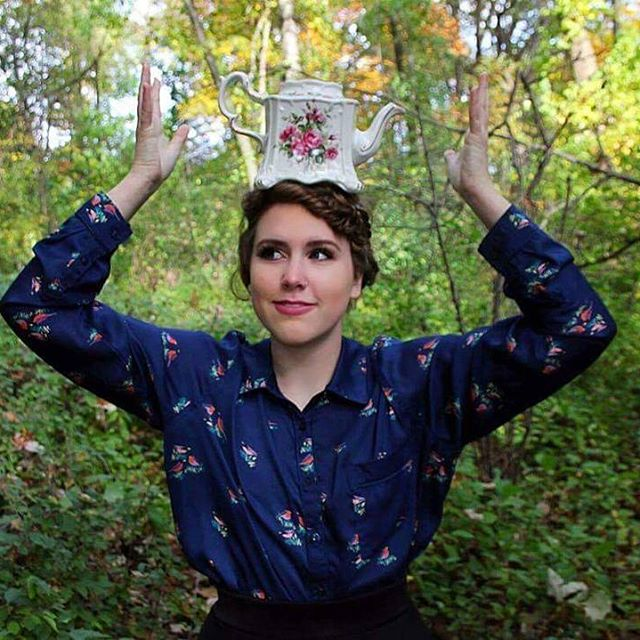
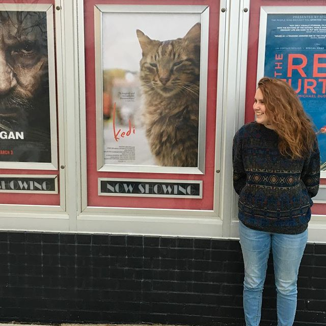

My Page :
 
You've probaby realized by now that this is a website about me and my skillfullness. It's all very exciting stuff. I'm sure you noticed. Oh, you're still here? that's cool. I didn't think this site was that interesting. Yet here you are, still reading. I would have given up by now. I mean, I'm just saying words and filling up space. I could do this all day.
"Before I do anything I ask myself, 'Would an idiot do that?' and if the answer is yes, I do not do that thing." - Dwight K. Schrute, The Office.
Photographs are property of Mary McKinley. She can be reached at Mary McKinley Photography. I highly suggest her for any and all of your photography needs (opens in Facebook)
Latte curtesy of Proper Cup of Brighton. (opens in Facebook).